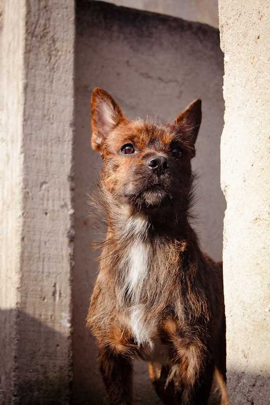
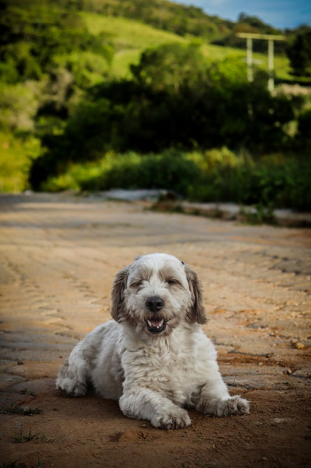
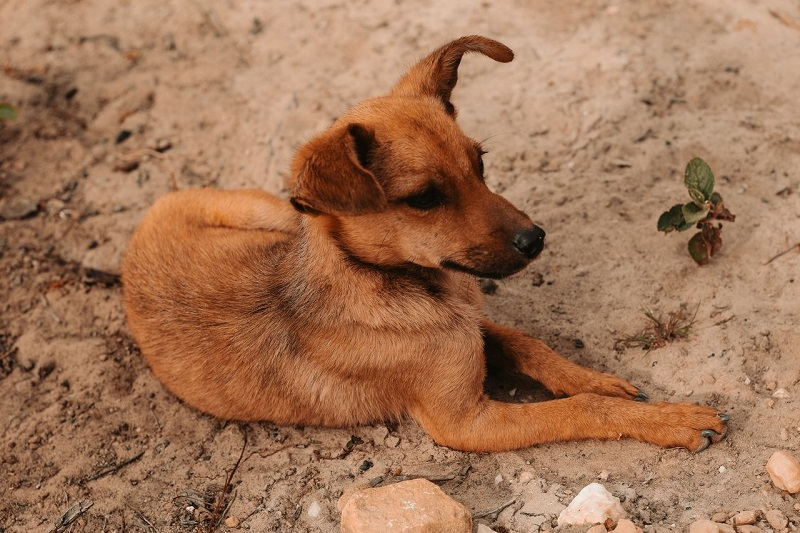
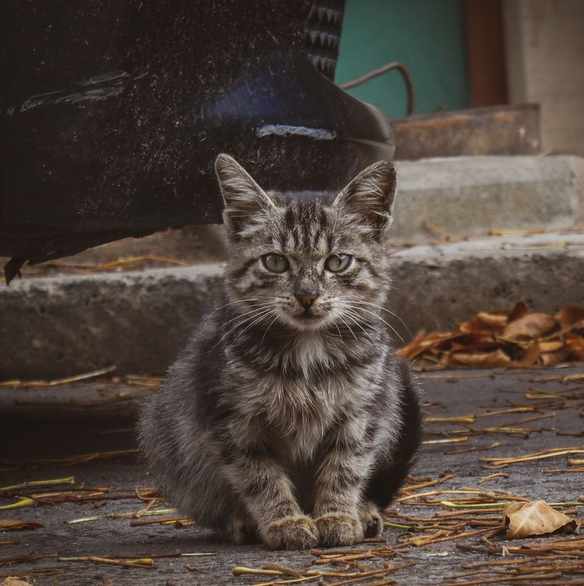
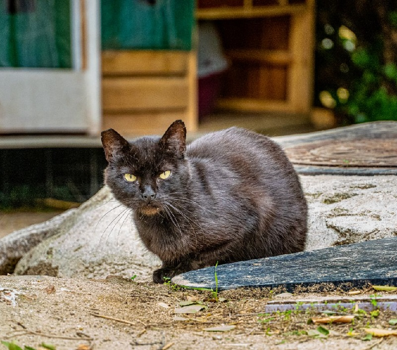
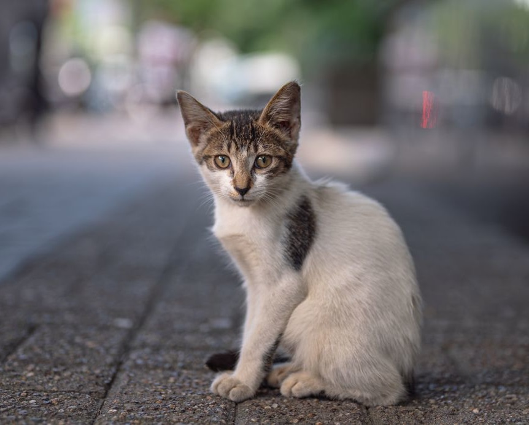

Porto Alegre, RS | Atendimento todos os dias, das 9h às 19h
Petly Recomeço
Uma nova família. Um novo começo.
Acreditamos que todo animal merece a oportunidade de recomeçar e encontrar um lar onde seja amado, respeitado e acolhido.
Por meio do Petly Recomeço, nosso projeto social de incentivo à adoção responsável, trabalhamos em parceria com organizações e protetores de animais para aproximar cães e gatos de famílias dispostas a transformar suas histórias.
Nosso compromisso vai além de ajudar a encontrar um novo lar. Como parte da iniciativa, todos os animais são entregues desparasitados, com a vacinação em dia e de banho tomado, recebendo os cuidados necessários para iniciar essa nova etapa com saúde, conforto e bem-estar.
Porque, para nós, adotar não é apenas oferecer um lar. É dar início a uma nova história de amor, cuidado e companheirismo.
Importante: os seis animais abaixo, seus nomes, histórias e fotografias são totalmente fictícios. Não estão disponíveis para adoção real.
Cães da campanha
Paçoca

Paçoca - fêmea, 2 anos, porte pequeno.
Paçoca foi encontrada perto de uma feira de bairro, onde costumava acompanhar os comerciantes em busca de carinho.
Com seu jeitinho curioso e seus pelos arrepiadinhos, conquistou rapidamente quem a acolheu. Agora, procura uma família para dividir passeios, brincadeiras e muitos momentos de afeto.
Tobby

Tobby - macho, 12 anos, porte médio.
Tobby foi encontrado descansando na entrada de um pequeno mercado. Apesar da idade e de alguns dentinhos que já ficaram pelo caminho, esse vovô conserva um charme especial.
Ele sonha com uma família que valorize os momentos tranquilos, as sonecas e a companhia de um amigo experiente.
Pingo

Pingo — filhote macho, 5 meses, porte pequeno.
Pingo foi encontrado sozinho próximo a uma praça e acolhido por uma protetora da região. Pequeno, curioso e cheio de energia, está naquela fase de descobrir o mundo com o focinho!
Procura uma família disposta a ensinar, brincar e acompanhar cada etapa de seu crescimento.
Gatos da campanha
Tito

Tito — macho, 8 meses.
Tito apareceu no quintal de uma família durante uma tarde chuvosa. Depois de receber abrigo e alimentação, foi acolhido temporariamente.
Ainda com jeitinho de filhote, adora explorar cantinhos e observar tudo ao redor. Espera encontrar um lar onde possa crescer cercado de segurança e carinho.
Salem

Salem — macho, 3 anos.
Salem vivia nas proximidades de um estacionamento, onde era alimentado por moradores. Aos poucos, foi se aproximando das pessoas que cuidavam dele, até ganhar a oportunidade de sair das ruas.
Com seu olhar marcante e personalidade observadora, procura uma família paciente que respeite seu tempo de adaptação.
Frida

Frida — fêmea, 6 meses.
Frida foi encontrada no jardim de um condomínio, onde chamava a atenção por sua pelagem diferente e seu olhar curioso.
Acolhida por uma voluntária, revelou-se uma gatinha exploradora que gosta de acompanhar tudo o que acontece. Agora, espera por um lar onde possa viver novas aventuras com tranquilidade.
Um carinho especial para começar essa nova história!
Cada adoção representa um novo começo, cheio de descobertas, carinho e companheirismo. Para celebrar esse momento, o projeto social Petly Recomeço oferece um kit de boas-vindas às famílias que realizam uma adoção responsável por meio de nossas divulgações.
O kit inclui um brinquedo e duas tigelas, uma para água e outra para alimentação, preparados com carinho para acompanhar os primeiros momentos do pet em seu novo lar.
Mas sabemos que adotar vai muito além de receber um novo companheiro. É assumir um compromisso para toda a vida do animal, oferecendo alimentação adequada, cuidados veterinários, segurança, atenção, respeito e muito amor.
Também significa compreender suas necessidades, respeitar seu tempo de adaptação e estar presente em todas as fases da vida, inclusive nos momentos que exigem mais dedicação e paciência.
O kit é apenas um pequeno gesto de acolhimento. O maior presente é o compromisso de proporcionar a esse animal uma vida digna, segura e cercada de afeto.
Porque uma adoção responsável não transforma apenas o futuro de um pet. Ela dá início a uma história que será construída todos os dias, juntos.